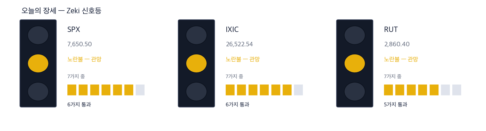
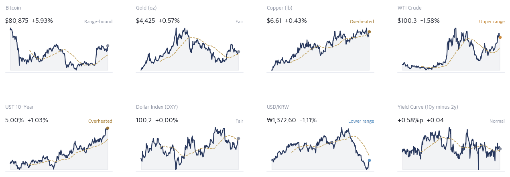
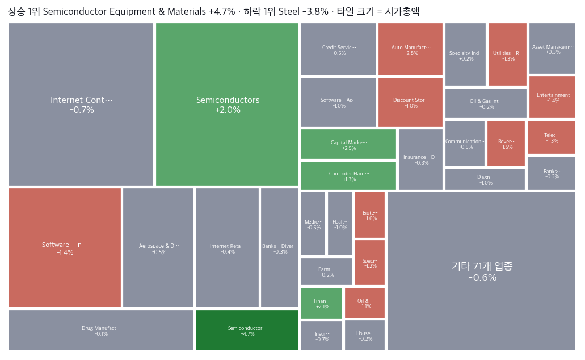
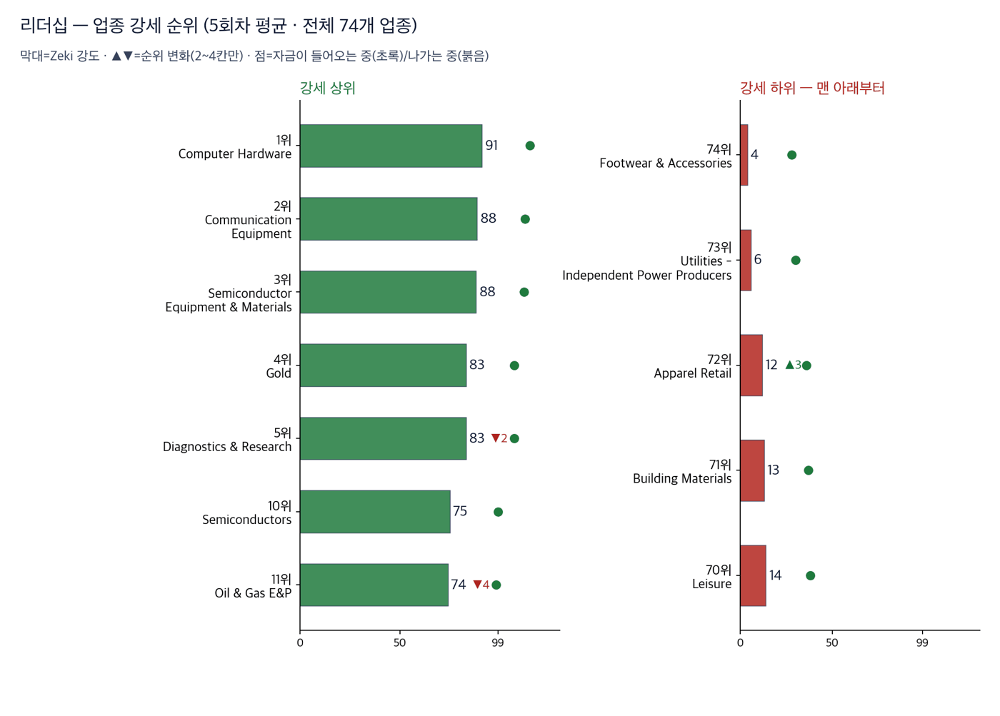
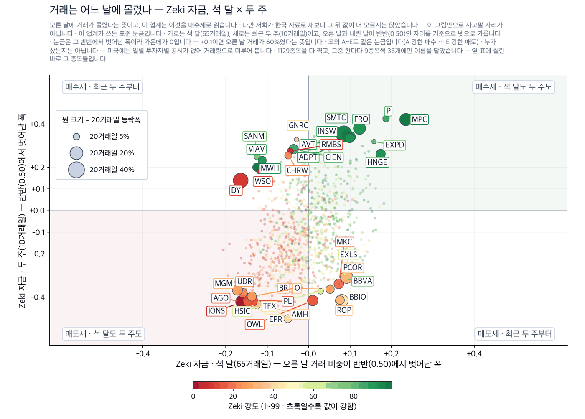
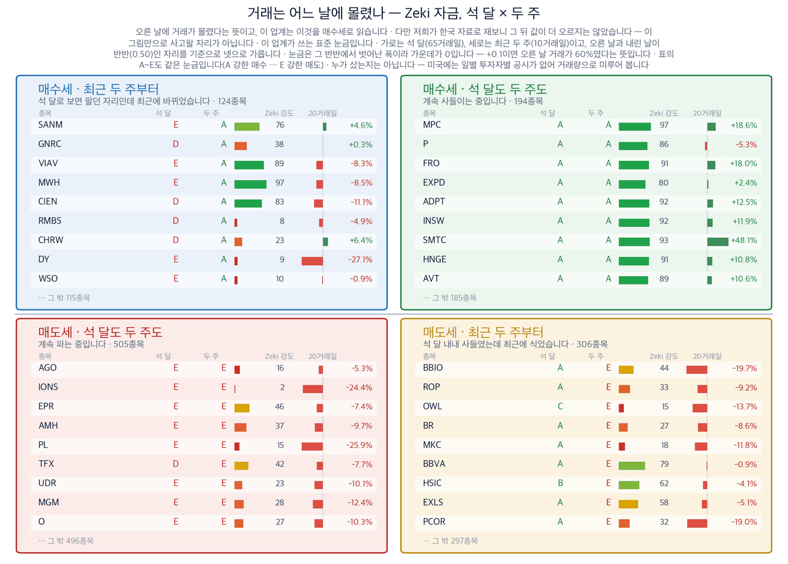
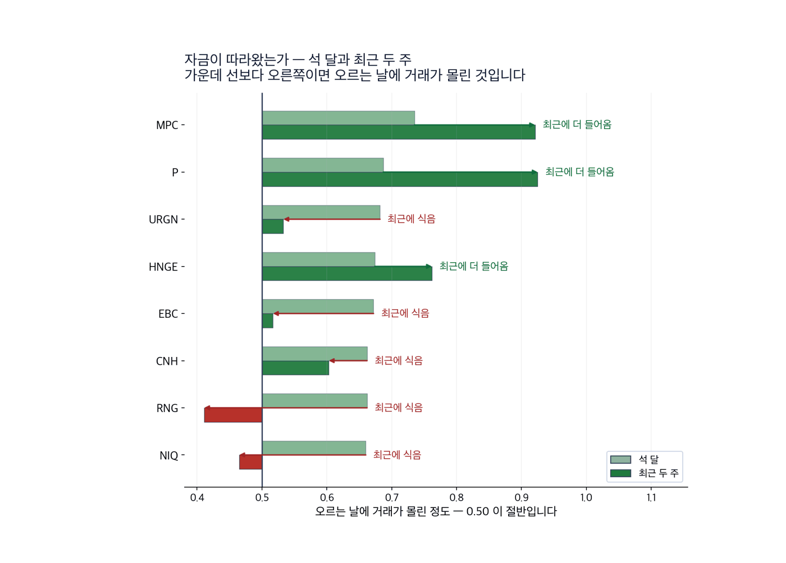

|
ZekiRex™ Apex US — 2026년 9월 21일
오늘의 판단 · 1/3
데이터 기준 9/18 (ET) 종가 · 밤사이 서울 9/21 종가(현지시간) |
ZekiRex™ |
|
|
| 저희가 정한 규칙이 고른 종목과 그 성적을 매일 그대로 싣습니다. 맞았든 틀렸든 지우지 않습니다. |
|
THE REX CALL
9월 18일 유가가 또 내렸습니다. 같은 날 미 국채 10년물 금리는 5.00%로 올랐습니다. 두 값이 반대로 갔습니다.
9월 18일 종가로 매매는 없었습니다. 손절가를 밑돈 종목도 없습니다. 포트폴리오 슬롯 100% 소진 상태이고, 남은 현금은 초단기 국채 펀드(USFR)에 있습니다.
오늘 반드시 알아야 할 것
1. 9월 18일 서부텍사스산원유는 1.58% 내려 배럴당 100.3달러입니다. 같은 날 미 국채 10년물은 5.00%로 올랐습니다. 원유와 장기 금리는 보통 같은 방향으로 움직입니다. 물가 기대를 함께 반영하기 때문입니다. 이번에는 갈라졌습니다. 2. 지수는 거의 제자리였습니다. S&P 500은 0.17% 올랐고 나스닥 종합은 0.39% 올랐습니다. 다우는 0.18% 내렸고 러셀 2000은 0.50% 내렸습니다. 큰 종목과 작은 종목이 다른 방향을 봤습니다. 3. 정유·판매 업종은 Zeki 강도 95로 순위가 그대로입니다. 원유가 내린 날입니다. 정유 이익은 원유 값이 아니라 원유와 제품의 차이에서 나옵니다. 그 차이가 아직 좁아지지 않았다는 뜻입니다. 종목이 4개뿐이라 뒤쪽 업종 표에는 올리지 않았습니다. 4. 주말 사이 유가는 더 내렸고 각국 국채 금리도 함께 내렸습니다. 한국 증시는 9월 21일 마감(현지시간)에서 삼성전자가 끌어 코스피가 7000선을 되찾았습니다. 유럽 반도체주도 같은 날 오름세로 열렸습니다. 5. 비트코인은 9월 18일 5.93% 올라 80,875달러입니다. 52주 고점에서는 16.6% 아래입니다. 위험을 사는 쪽과 파는 쪽이 같은 주에 함께 움직였습니다.
| |
 이 그림 읽는 법 | 켜진 등 | 오늘 시장이 어떤 상태인지 알려 줍니다. 초록은 매수 우위, 노랑은 관망, 빨강은 매수 자제입니다. | | 채워진 칸 | 7가지 조건 중 몇 가지를 만족하는지입니다. 많이 만족할수록 오르는 종목이 넓게 퍼져 있습니다. | | 칸이 다 찼는데 노랑·빨강이면 | 다른 이유로 한 단계 낮춘 것입니다. 그림 아래에 그 이유를 적었습니다. |
|
최근 10거래일 국면 추이 (왼쪽이 과거) 방향 — 어디까지 왔나. Zeki 신호등은 7가지 조건을 세어 정합니다. S&P 500과 나스닥 종합이 6가지, 러셀 2000이 5가지입니다. 3개 지수 모두 장기 구조는 온전합니다. 러셀 2000만 50일 이동평균선 아래에 있습니다. 노란불은 사지 말라는 뜻이 아니라 크기를 늘리지 말라는 뜻입니다.
| |
| 오늘의 조치 |
| 오늘 신규 매매 없음. 규칙이 요구하지 않는 날에 거래하지 않는 것도 하나의 결정입니다. |
|
| 오늘 하나만 깊이 보면 |
|
유가와 장기 금리가 같은 날 반대로 갔습니다
9월 18일 서부텍사스산원유가 1.58% 내려 배럴당 100.3달러입니다. 같은 날 미 국채 10년물은 5.00%로 올랐습니다. 달러인덱스는 100.2로 그대로였습니다. 통화 쪽 이유가 아니라면 남는 설명은 채권 공급입니다. 2년물은 4.42%로 거의 움직이지 않았고 긴 쪽만 올랐습니다. 구리는 6.61달러로 올라 경기가 꺾였다는 신호는 아직 없습니다. 왜 그런가. 한국과 미국 지면이 같은 주말을 다르게 셉니다. 미국 지면은 유가 하락을 증시 상승의 이유로 들었습니다. 한국 지면은 삼성전자의 수출과 배당 기대를 앞세웠습니다. 두 설명은 부딪치지 않습니다. 유가가 내리면 원가가 내리고, 그 이익은 물건을 만드는 쪽에 먼저 갑니다. 다음에 무엇이. 다음 판에서 함께 볼 것은 2가지입니다. 정제마진과 9월 24일 워싱턴 회담입니다. 차이가 좁아지면 정유 쪽 판단을 바꿉니다. 회담에서 관세와 유가가 한 상에 오르므로 원가 전망이 하루에 바뀔 수 있습니다.
그래서 우리는: 정유주를 들고 계시다면 보실 것은 유가 기사가 아니라 정제마진입니다. 정유 이익은 원유와 제품의 차이에서 나옵니다. 9월 18일은 그 차이가 아직 좁아지지 않았다는 쪽에 섰습니다. 반대쪽도 적습니다. 유가가 내리는 이유가 수요 감소라면 원유와 제품이 함께 내립니다. 그러면 정유 이익도 같이 줄어듭니다. 저희가 든 4종목 가운데 2종목이 정유·판매입니다. 같은 업종 2종목은 같은 날 같은 방향으로 움직입니다. 차이가 좁아지면 2종목이 함께 흔들립니다.
Rex Lens™
| |
| 그 밖에 알아야 할 것 |
| 9월 24일 워싱턴에서 관세 휴전이 한 상에 오릅니다 · 미국과 중국의 실무진이 관세 품목 예외를 두고 진전이 있었다고 밝혔습니다. 두 나라 정상은 9월 24일 워싱턴에서 만납니다. (Nikkei Asia · CBS News · Semafor) → 수입 원가가 한 자리에서 정해집니다. 부품을 밖에서 들여오는 회사라면 원가 전망이 그날 하루에 바뀔 수 있습니다. 회담 전에 비중을 크게 늘리는 것은 한 자리의 결과에 거는 것과 같습니다. | | 백악관이 국립보건원 연구비를 직접 쥐려 합니다 · 백악관이 국립보건원의 연구비 배분을 직접 통제하려 움직이고 있습니다. 생의학 연구 전반으로 넓히려는 시도도 함께 전해졌습니다. (New York Times · The Straits Times) → 미국 바이오 기업의 초기 연구는 이 돈에서 시작하는 경우가 많습니다. 배분 기준이 바뀌면 실적에 나타나기까지 몇 분기가 걸립니다. 바이오를 들고 계시다면 지금 값이 아니라 연구 단계의 자금줄을 보셔야 합니다. | | 브뤼셀이 북극 석유·가스 시추 금지를 유지합니다 · 유럽연합 집행위원회가 노르웨이의 압박에도 북극 석유·가스 시추 금지를 유지하기로 했습니다. 공급을 늘릴 길 하나가 닫혀 있습니다. (Euronews) → 지금은 유가가 내리는 국면이라 이 소식이 값에 묻힙니다. 공급이 다시 빠듯해지면 이런 제약이 먼저 값에 실립니다. 에너지를 길게 보신다면 지금 기록해 두실 항목입니다. |
|
한국과 미국을 잇는 것: 뉴욕 독자에게 이번 아시아 마감이 주는 것은 방향의 확인입니다. 뉴욕이 닫혀 있는 동안 서울과 유럽의 반도체가 같은 쪽으로 움직였습니다. 두 곳이 따로 올랐다면 각자의 사정입니다. 함께 올랐으므로 두 곳 모두 메모리 수요 하나에 좌우됩니다. 그 수요가 흔들리면 두 곳이 같이 흔들립니다. |
|
|
시장이 오늘 한 일 · 2/3
데이터 기준 9/18 (ET) 종가 · 밤사이 서울 9/21 종가(현지시간) |
ZekiRex™ |
|
|
| 핵심 지표 |
S&P 500 7,650 +0.17% · 고점 −1.9% 7,650으로 0.17% 올랐습니다. 52주 고점에서 1.9% 아래입니다. 7가지 조건 가운데 6가지를 통과했습니다. 못 넘은 하나는 52주 저점에서 30% 위에 있어야 한다는 조건입니다. 신고가권 | 나스닥 종합 26,523 +0.39% · 고점 −2.1% 26,523으로 0.39% 올랐습니다. 52주 고점에서 2.1% 아래입니다. 3개 지수 가운데 오름폭이 가장 큽니다. 반도체가 끌었고, 금리가 오른 날이라 그만큼 눈에 띕니다. 상단권 | 러셀 2000 2,860 -0.50% · 고점 −6.8% 2,860으로 0.50% 내렸습니다. 52주 고점에서 6.8% 아래입니다. 7가지 조건 가운데 5가지만 통과했습니다. 50일 이동평균선 아래에 있습니다. 작은 종목이 금리를 더 탑니다. 박스권 | 미 국채 10년 5.00% 5.00%로 올랐습니다. 2년물은 4.42%로 거의 그대로입니다. 장단기 금리차가 0.58%포인트로 넓어졌습니다. 시장이 걱정하는 것은 경기 둔화가 아니라 물가 재가속입니다. 과열 | 달러인덱스 100.2 적정 | 포트폴리오 +6.55% 현금 70% · 보유 4종목 8월 11일 이후 6.55%입니다. 같은 기간 S&P 500은 0.91% 내렸고 나스닥 100은 0.42% 올랐습니다. 차이를 만든 것은 정유 2종목과 델테크놀로지스입니다. 설정 이후 |
|
Rex Pulse 거시 지표 16종 1년 추이  Rex Pulse™ — 지수·가상자산 / 통화 / 원자재 / 채권 16종, 1년 흐름과 50일 평균값(점선) · 기준 뉴욕 9/18 종가, 서울 9/21 종가(현지시간) |
Zeki 신호등은 노란불입니다. 9월 18일 종가 기준으로 지수 3개 모두 장기 구조가 온전합니다. 이 하루를 가른 것은 채권입니다. 미 국채 10년물이 5.00%로 오르는 동안 2년물은 4.42%로 거의 움직이지 않았습니다. 긴 쪽만 오르는 모양은 경기 둔화가 아니라 물가 재가속을 걱정한다는 뜻입니다. 원자재는 반대쪽을 가리킵니다. 원유는 내렸고 구리는 6.61달러로 올랐습니다. 구리가 버티는 한 수요가 꺾였다는 증거는 없습니다. |
업종 히트맵 — 오늘의 상승·하락 지도  색은 당일 등락(짙을수록 큼), 타일은 시가총액입니다. 상단에 당일 상승·하락 1위가 적혀 있고, 큰 칸이 움직인 날이 지수가 움직인 날이라는 뜻입니다 — 아래 리더십 순위(추세의 힘)와 함께 읽으십시오. |
| 리더십 — 업종 강세 순위 |
 이 그림 읽는 법 | 막대 | 그 업종 종목들을 Zeki 강도 순으로 세웠을 때 **한가운데 놓인 종목의 값**입니다. 최근 5회차를 평균해 하루치 흔들림을 걷어냈습니다. | | ▲▼ 숫자 | 하루 전보다 순위가 몇 칸 움직였는지입니다. 1칸은 너무 작고 5칸 이상은 절반이 되돌아와서(실측) 2~4칸만 적습니다. | | 점 | 20거래일 자금 순위의 방향입니다. 초록이면 들어오는 중, 붉으면 나가는 중입니다. | | 공동 순위 | 값이 같으면 같은 순위입니다. 억지로 가르지 않습니다. | | 강세 상위 | 강도가 가장 높은 업종들입니다. 자리가 열리면 여기서부터 찾습니다. | | 강세 하위 | 전체 업종 가운데 맨 아래입니다. 번호는 왼쪽과 같은 잣대라, 38개 업종이면 38위가 가장 약합니다. 지금 새로 살 자리가 아니고, 들고 계신 종목이 여기 속하면 손절가부터 확인하실 자리입니다. 바닥에서 돌아서는 업종은 막대보다 점이 먼저 초록으로 바뀝니다. | | 번호가 건너뛰면 | ＋ 표시가 붙은 업종입니다. 맨 아래 다섯에 들지는 않았지만 본문이 짚었거나 저희가 들고 있어 함께 실었습니다. 자료가 빠진 것이 아닙니다. |
| 순위 | 업종 | Zeki 강도 | 변화 |
|---|
| 1위 | Computer Hardware | 91 | | | 2위 | Communication Equipment | 88 | | | 3위 | Semiconductor Equipment & Materials | 88 | | | 74위 | Footwear & Accessories | 4 | | | 73위 | Utilities - Independent Power Producers | 6 | | | 72위 | Apparel Retail | 12 | ▲3 |
|
| 외국인과 기관 — 돈이 실제로 어디로 갔나 |
 이 그림 읽는 법 | 점 하나 | 종목 하나입니다. 가로·세로 위치가 두 값을 그대로 나타내고, 가운데 가로·세로로 그어진 두 선이 기준선입니다. 네 귀퉁이의 이름표가 그 칸의 뜻입니다. | | 점 크기 | 최근 20거래일 등락폭입니다. 오르든 내리든 크게 움직였으면 큰 점입니다. | | 점 색 | Zeki 강도입니다. 초록일수록 주가가 시장에서 강합니다. | | 30종목만 | 이름이 겹치면 못 읽기 때문입니다. 가운데 몰린 나머지는 움직임이 거의 없는 종목들이라 뺐습니다. |
 이 그림 읽는 법 | 이 그림이 말하지 않는 것 | 같은 기간의 수급과 등락을 나란히 놓은 것입니다. 앞으로는 이렇습니다 — 외국인과 기관이 사면 하루 이틀은 실제로 오릅니다. 그 다음 되돌립니다. 그리고 그 폭이 세금과 수수료보다 작습니다. 그래서 이 그림을 보고 사고파시면 손해입니다. 둘 다 사들이는 것을 보고 그 다음 날 사면, 20거래일 뒤에 올라 있을 확률은 48%입니다 — 아무 종목이나 골랐을 때(49%)와 같습니다. 저희가 503종목 17년치로 쟀습니다. | | 네 칸 | 가로와 세로 두 값이 각각 기준선을 넘었는지로 넷을 가릅니다. 오른쪽 위는 둘 다 넘은 곳, 왼쪽 아래는 둘 다 못 넘은 곳, 나머지 두 칸은 한쪽만 넘은 곳입니다. 칸 이름이 그 칸에 든 종목의 상태를 한 문장으로 적어 둔 것입니다. | | 가운데 두 칸 | 두 기간을 비교하는 자리입니다. 글자 A~E가 있으면 이 업계가 쓰는 표준 등급으로, A는 강한 매수, B는 매수 우세, C는 매수와 매도가 반반, D는 매도 우세, E는 강한 매도를 뜻합니다(전체를 다섯으로 나눈 순위라 A가 상위 20%입니다). 숫자가 있으면 그 기간에 산 양에서 판 양을 뺀 것입니다. | | 칸마다 9종목 | 그 칸에서 움직임이 가장 큰 순서입니다. 나머지는 칸 아래에 몇 종목인지만 적었습니다. 옆 산점도가 이름을 다는 종목이 바로 이 9종목씩입니다. | | 20거래일 막대 | 0을 가운데 두고 오른쪽이 상승, 왼쪽이 하락입니다. 길이는 같은 칸 안에서만 서로 비교하십시오 — 칸마다 기준이 다릅니다. | | Zeki 강도 | 1~99 순위입니다. 막대가 길수록, 초록에 가까울수록 그 종목의 주가가 시장에서 강합니다. |
 이 그림 읽는 법 | 막대 둘 | 위가 석 달, 아래가 최근 두 주입니다. 같은 종목의 두 기간을 나란히 놓았습니다. | | 가운데 선 | 0.50 입니다. 오른쪽이면 오르는 날에 거래가 더 몰렸고, 왼쪽이면 내리는 날에 몰렸습니다. | | 화살표 | 석 달에서 두 주로 가는 방향입니다. 오른쪽으로 가면 최근에 더 들어온 것이고, 왼쪽이면 식은 것입니다. | | 맨 오른쪽 글씨 | 그 방향을 말로 적은 것입니다 — 「최근에 더 들어옴」이면 자금이 이어지는 중입니다. |
미국에는 일별로 누가 샀는지 공시가 없습니다. 기관 보유는 분기에 한 번 그것도 45일 늦게 나옵니다. 그래서 이 그림은 사람이 아니라 거래를 봅니다 — 0.50 이 기준이고, 오른쪽으로 갈수록 석 달 동안, 위로 갈수록 최근 두 주 동안 오르는 날에 거래가 몰렸다는 뜻입니다. 업종 — 값의 강세와 돈의 흐름을 나란히 돈이 먼저 온 곳 — 값은 아직입니다 | 업종 | 강세 | 자금 | 20거래일 |
|---|
| Packaged Foods | 102 | 27 | +0.002 | | Information Technology Services | 84 | 13 | +0.017 | | Airlines | 79 | 29 | +0.001 |
값만 센 곳 — 돈은 빠지고 있습니다 | 업종 | 강세 | 자금 | 20거래일 |
|---|
| Communication Equipment | 4 | 55 | -0.025 | | Semiconductor Equipment & Materials | 5 | 56 | -0.028 | | Gold | 12 | 61 | -0.033 |
강세 순위 — Zeki 강도(12개월 가중)로 세운 순위입니다. 최근 5회차를 평균해 하루치 흔들림을 걷어냈습니다. 자금 순위 — 20거래일 순매수로 세운 순위입니다. 값이 아니라 **돈이 들어온 양**을 봅니다. 공동 순위 — 값이 같으면 같은 순위를 줍니다. 억지로 가르지 않습니다. 두 순위가 어긋나면 — 그 자리가 볼 만합니다. 돈이 먼저 오면 값이 아직인 것이고, 값이 먼저 세면 돈이 빠지는 중일 수 있습니다. 규칙이 슬롯이 비면 이 순서로 삽니다: MU (15일째) → AMD (8일째) → OKTA (15일째). 규칙의 대기 순서를 적은 것이지 추천이 아닙니다. |
|
|
우리가 한 일 · 3/3
데이터 기준 9/18 (ET) 종가 · 밤사이 서울 9/21 종가(현지시간) |
ZekiRex™ |
|
|
기준 2026-09-18 15:48 ET 실제 운용 계좌를 그대로 비춥니다 종목·비중·매매·손절가는 모두 실제 계좌의 것입니다. 이 지면에서 고른 것은 하나도 없습니다. 계좌 금액과 주식 수는 싣지 않습니다. 추천이 아닙니다. | 종목 | 비중 | 손익 | 현재가 | 손절가 | 여유 | 보유 기간 | 다음 이벤트 | | IRDM | 7.4% | −2.9% | $46.67 | $44.87 | +4.0% | 28일 | — | | MPC | 9.0% | +18.6% | $427.02 | $331.32 | +28.9% | 28일 | 실적 11-03 | | DINO | 3.8% | +21.7% | $116.53 | $88.07 | +32.3% | 33일 | 실적 10-29 | | DELL | 10.0% | +31.0% | $571.39 | $401.41 | +42.3% | 28일 | 실적 11-27 | | 현금 | 69.8% | 단기 국채 ETF(USFR)에 예치해 둡니다 |
|
실제로 사고판 기록 | 09-02 | USFR | 매수 | $50.48 | | 08-24 | MPC | 매수 | $360.13 | | 08-24 | IRDM | 매수 | $48.05 | | 08-24 | DELL | 매수 | $436.32 | | 08-19 | DINO | 매수 | $95.73 |
값은 실제로 사고판 값 그대로입니다. 주식 수와 금액은 싣지 않습니다. |
| 보유 종목 소식 — 오늘 |
| DELL | 머니투데이는 21일 워싱턴포스트가 트럼프 대통령 재집권 후 공개된 약 3만 건의 거래 내역을 분석해 대통령과 두 아들이 델과 마이크론 등에 투자해 왔다고 보도했다고 전했습니다. — Money Today (citing The Washington Post) 2026-09-21 16:26 KST |
|
| Rex 25™ — 당일 등락률 전체 순위 |
| 01 MU Micron Technology+3.92% | | 02 AMD Advanced Micro Devices+2.70% | | 03 MRX Marex Group+1.53% | | 04 ALNT Allient+1.39% | | 05 CGAU Centerra Gold+1.19% | | 06 TGTX TG Therapeutics+0.71% | | 07 ● MPC Marathon Petroleum+0.69% | | 08 CHEF The Chefs' Warehouse+0.63% | | 09 MTRN Materion+0.42% | | 10 OII Oceaneering Internatio+0.19% | | 11 PACS PACS Group+0.14% | | 12 SLDE Slide Insurance Holdin-0.20% | | 13 LPG Dorian LPG-0.27% | | 14 PSX Phillips 66-0.39% | | 15 ● DINO HF Sinclair-0.62% | | 16 BJRI BJ's Restaurants-0.65% | | 17 CVI CVR Energy-0.83% | | 18 CXW CoreCivic-0.87% | | 19 CVE Cenovus Energy-0.88% | | 20 GEO Geo Group Inc (The) RE-1.18% | | 21 APA APA-1.30% | | 22 ● DELL Dell Technologies-3.46% | | 23 MT Arcelor Mittal NY Regi-3.52% | | 24 OKTA Okta-4.03% | | 25 DAVE Dave-5.24% |
|
8,049종목 가운데 64종목이 저희 기준을 넘었고 그중 위 25종목을 싣습니다. 상승 쪽 맨 위는 마이크론테크놀로지로 3.92% 올랐습니다. 어드밴스드마이크로디바이시스가 2.70%로 뒤를 이었습니다. 하락 쪽에는 델테크놀로지스가 있습니다. 3.46% 내렸고 거래량은 50일 평균보다 53% 많았습니다. 저희가 든 종목이면서 같은 날 하락 5위 안에 들었습니다. 두 숫자는 부딪치지 않습니다. 하락은 하루치이고, 저희가 든 근거는 12개월 강도와 연간 이익입니다. 다만 거래량이 평균보다 늘면서 내린 것은 파는 쪽에 큰 손이 있었다는 뜻입니다. 다음 판에서 거래량이 또 늘며 내리는지 확인해 보셔야 합니다. |
| ● 표시가 우리 보유 종목입니다. 순서는 등락률만 따릅니다 — 하락 상위에 보유 종목이 있어도 그 자체가 매도 신호는 아닙니다. 매도는 −8% 손절과 오실레이터 이탈, 둘뿐입니다. |
| 관문을 통과한 종목 — 자리가 없어 담지 못한 이름들 |
| 반도체·하드웨어 4 | | MU Micron Technology, I | RS 98 | $1,015.80 | | AMD Advanced Micro Devic | RS 97 | $559.82 | | P Everpure, Inc. | RS 88 | $104.14 | | QRVO Qorvo, Inc. | RS 85 | $117.18 | | 금융 3 | | SLDE Slide Insurance Hold | RS 90 | $24.95 | | BFH Bread Financial Hold | RS 85 | $108.53 | | MRX Marex Group Limited | RS 94 | $74.39 | | 소재·광물 3 | | CGAU Centerra Gold Inc. | RS 92 | $23.02 | | WPM Wheaton Precious Met | RS 80 | $151.01 | | TECK Teck Resources Ltd | RS 81 | $65.52 | | 에너지·정유 3 | | LPG Dorian LPG Ltd. | RS 94 | $58.15 | | PSX Phillips 66 | RS 94 | $273.13 | | REPX Riley Exploration Pe | RS 87 | $43.64 | | 헬스케어 2 | | PACS PACS Group, Inc. | RS 94 | $42.12 | | INCY Incyte Corporation | RS 85 | $125.31 |
|
왜 못 담았나. 규칙상 자리는 넷뿐이고 각 자리에 총자산 25%가 들어갑니다 — 한 종목이 −8%에 걸려도 계좌 전체로는 2% 손실이 되도록 맞춘 구조입니다. 자리를 비우는 길은 손절과 오실레이터 이탈 둘뿐이라, 더 좋은 후보가 나와도 갈아타지 않습니다.
통과 목록이 말하는 것. 64개가 35개 업종에 흩어져 있고 상위 3개 업종을 합쳐도 12종목(19%)뿐입니다. 시장의 강세는 넓습니다. 우리 4자리는 에너지·정유 2, 반도체·하드웨어 1로 나뉘어 있고 가장 큰 쪽이 에너지·정유입니다 — 그래서 하루 등락이 지수와 평균 1.2%p 벌어졌고, 가장 크게 갈린 8/18 세션에는 S&P 500 보다 3.2%p 더 내렸습니다. (업종 미확인 1종목 제외) 아래는 그중 종합점수 상위 15개이며, 매수 추천이 아니라 자리가 열리면 작업을 시작할 순서입니다. |
| 보유 비중 — 하한 8% / 진입 25% |
| Dell Technologies DELL10.0% | | Marathon Petroleum MPC9.0% | | Iridium Communications IRDM7.4% | | HF Sinclair DINO3.8% |
25%는 진입 시점의 크기이지 보유 한도가 아닙니다. 오른 종목을 크다는 이유로 줄이지 않습니다. |
| 한 줄 정리: Zeki 신호등은 노란불입니다. 그런데 S&P 500 딱지는 신고가권입니다. 두 표시가 다른 말을 하는 것처럼 보입니다. 같은 말입니다. 값은 고점 가까이 있고, 그 값을 받치는 조건은 아직 다 차지 않았습니다. S&P 500은 7가지 조건 가운데 6가지를 통과했고 러셀 2000은 5가지입니다. 값이 앞서가고 확인이 덜 된 자리에서는 크기를 늘리지 않습니다. |
|
포트폴리오 누적 수익률 대 벤치마크  지금 지수와의 차이 — S&P 500 대비 +7.46%p · 나스닥100 대비 +6.13%p 성과 기준일은 8월 11일입니다. 그날 이후 포트폴리오는 6.55%입니다. 같은 기간 S&P 500 상장지수펀드는 0.91% 내렸고 나스닥 100 상장지수펀드는 0.42% 올랐습니다. 차이를 만든 것은 정유 2종목과 델테크놀로지스입니다. 종목 4개로 만든 숫자이므로 한 종목이 흔들리면 선도 함께 흔들립니다. 그래서 이 앞선 폭은 실력이 아니라 표본이 작다는 뜻입니다. 닫은 거래가 아직 없어 승률은 싣지 않습니다. 거래를 닫기 시작하면 그때부터 승률을 함께 보셔야 합니다. |
| 2026-09-18 종가 기준 심사 8,049종목 중 등급 산출 4,004종목 가운데 64종목이 조건을 통과했습니다. 조건 통과는 매수 추천이 아닙니다. |
| 출처: 야후 파이낸스, 16:00 ET 종가 · 서울외국환중개 고시환율(네이버 금융) · 한국 국고채·회사채 3년 금리: 네이버 금융 · 야후 파이낸스 |
|
본 리포트는 정보 제공 목적이며 개별 투자 자문이 아닙니다. ZekiRex™ Apex US는 1,000만 달러 규모의 모의 포트폴리오를 규칙 기반으로 운용합니다. 실제 계좌도, 주문도, 사고판 일도 없습니다. 표시된 성과에는 수수료와 세금, 매매 시 가격 미끄러짐이 반영되지 않았습니다. 종목 자료에는 상장폐지된 회사가 빠져 있습니다. 살아남은 회사만 세는 셈이라 성과가 실제보다 높게 나옵니다. 과거의 성과는 미래를 보장하지 않으며, 투자에는 원금 손실 위험이 따릅니다. |
| This is the Rex Way, ZekiRex™ |